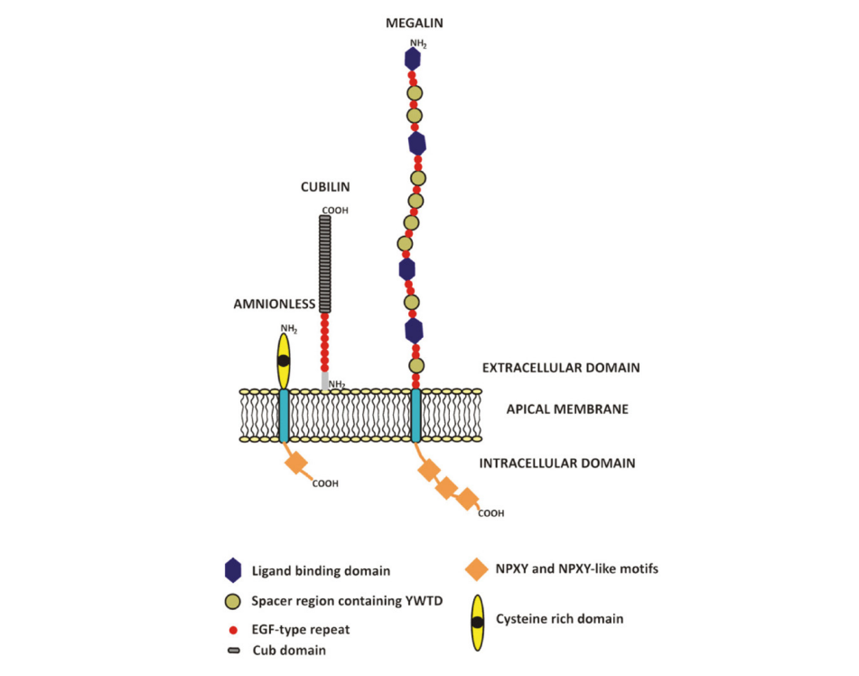

FABAInforma
Servicio de Apoyo Científico-Técnico
Avances sobre Enfermedad renal crónica
Se presentan tres trabajos de reciente publicación sobre Enfermedad Renal Crónica (ERC).
Compartir en:


Uno de ellos revisa los conceptos actuales sobre la síntesis, captación y reciclaje de la albúmina. El otro es un trabajo original sobre detección sencilla de la ERC en etapas tempranas y finalmente se incluyen las guías prácticas clínicas de “Kidney Disease: Improving Global Outcomes (KDIGO)” que fueron actualizadas en 2021 sobre la base de las de 2012.
1 - Manejo renal de la albúmina: desde los primeros hallazgos hasta los conceptos actuales. Gburek J, Konopska B, Gołąb K. Int J Mol Sci. 2021 Jun; 22(11): 5809.
La albúmina es la principal proteína del plasma sanguíneo, la linfa, el líquido cefalorraquídeo y el líquido intersticial. La proteína participa en una variedad de funciones biológicas importantes, como el mantenimiento de la presión osmótica coloidal adecuada, el transporte de metabolitos importantes y la acción antioxidante. La síntesis de la albúmina tiene lugar principalmente en el hígado, y su catabolismo se produce principalmente en el endotelio vascular del músculo, la piel y el hígado, así como en el epitelio tubular renal. La investigación de larga duración en esta área ha delineado la ruta principal de su catabolismo que involucra la filtración glomerular, la captación endocítica tubular a través del tándem de receptores depuradores de múltiples ligandos: megalina y cubilina-complejo sin amnios, así como la degradación lisosomal a aminoácidos. Sin embargo, la investigación de las últimas décadas indica que también mecanismos adicionales pueden operar en este proceso hasta cierto punto. Se demostró la captación directa de albúmina en los podocitos glomerulares a través del receptor para la región cristalizable de las inmunoglobulinas (receptor FC neonatal). Además, se sugirió el reciclaje luminal de péptidos cortos al torrente sanguíneo y/o de vuelta al lumen tubular o transcitosis de moléculas completas. El artículo discute los aspectos moleculares de estos procesos y presenta los principales hallazgos y controversias surgidas a la luz de las investigaciones de la última década. Su mejor caracterización es esencial para futuras investigaciones sobre la fisiopatología de la insuficiencia renal proteinúrica y el desarrollo de estrategias terapéuticas eficaces.
2 - Detección de casos de sospecha de enfermedad renal crónica en etapa temprana a partir de datos de laboratorio clínico: la comparación entre la conductividad y la proteína en orina. Ming-Feng Wu, Ching-Hsiao Lee, Po-Hsin Pai, Jiunn-Min Wan Biomedicines 2023, 11, 379.
La enfermedad renal crónica (ERC) afecta a más de 800 millones de la población mundial. La detección temprana seguida del manejo clínico se encuentra entre los mejores enfoques para las personas afectadas. Sin embargo, aún no se dispone de una herramienta de detección sensible.
Métodos: Revisamos retrospectivamente a 600 pacientes mayores de 20 años con un rango completo de tasa de filtración glomerular estimada (eGFR) para la evaluación clínica de la función renal entre el 1 de enero de 2020 y el 30 de abril de 2021, en el Hospital General de Veteranos de Taichung, Taiwán. Con un muestreo estratificado basado en el nivel de eGFR, los participantes se agruparon uniformemente en conjuntos de prueba y validación para un modelo predictivo. Se utilizaron registros de datos concurrentes de laboratorio de muestras de orina como entradas para el modelo.
Resultados: El modelo predictivo propuso dos fórmulas basadas en la conductividad de la orina para detectar sospechas de ERC en etapa temprana. Una fórmula, P_masculino45, era para sujetos masculinos usados de ≥45 años y tenía una precisión de predicción del 76,3 % y una sensibilidad del 97,3 %. La otra fórmula, P_femenino55, se utilizó para sujetos femeninos de ≥55 años. Tenía una precisión de predicción del 81,9 % y una sensibilidad del 98,4 %. La conductividad de la orina, sin embargo, tuvo asociaciones bajas con la glucosa en la orina y los niveles de proteína en la orina.
Conclusión: Los dos modelos predictivos fueron de bajo costo y proporcionaron una detección rápida. En comparación con la proteína en la orina, estos modelos tuvieron un mejor rendimiento de detección para la sospecha de ERC en etapa temprana. También se puede aplicar para monitorear la ERC en pacientes con diabetes mellitus progresiva.
3 - Kidney Disease: Improving Global Outcomes (KDIGO) Blood Pressure Work Group. KDIGO 2021 Clinical Practice Guideline for the Management of Blood Pressure in Chronic Kidney Disease. Kidney Int. 2021;99(3S):S1–S87
La Guía de práctica clínica de Kidney Disease: Improving Global Outcomes (KDIGO) 2021 para el control de la presión arterial en la enfermedad renal crónica (CKD) representa una actualización de la guía KDIGO de 2012 sobre este tema. El alcance incluye temas cubiertos en la guía original, como objetivos óptimos de presión arterial, intervenciones en el estilo de vida y terapias antihipertensivas en pacientes con ERC que no reciben diálisis, incluidas poblaciones especiales como los receptores de trasplantes de riñón y los niños. Además, esta guía introduce un capítulo dedicado a la medición adecuada de la presión arterial. El objetivo de la guía es servir como un recurso útil para médicos y pacientes al proporcionar recomendaciones prácticas con infografías útiles basadas en una revisión sistemática formal rigurosa. Otro objetivo es proponer recomendaciones de investigación para áreas en las que existen lagunas de conocimiento. La guía se dirige a los médicos que tratan la presión arterial alta y la ERC, teniendo en cuenta las implicaciones de políticas y recursos. El desarrollo de esta actualización de la guía siguió un proceso explícito de revisión de evidencia. Los enfoques de tratamiento y las recomendaciones de las guías se basan en revisiones sistemáticas de estudios relevantes, y la evaluación de la calidad de la evidencia y la fuerza de las recomendaciones siguieron el enfoque Grading of Recommendations Assessment, Development and Evaluation (GRADE). Se discuten las limitaciones de la evidencia y se presentan áreas de investigación futura.